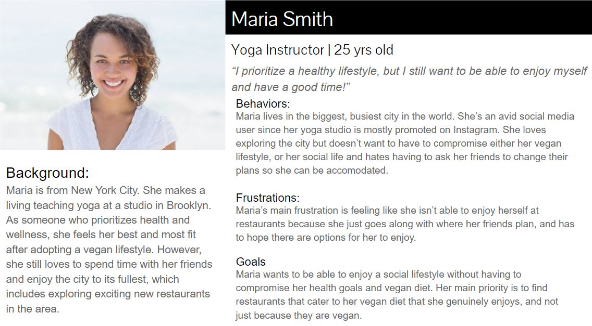
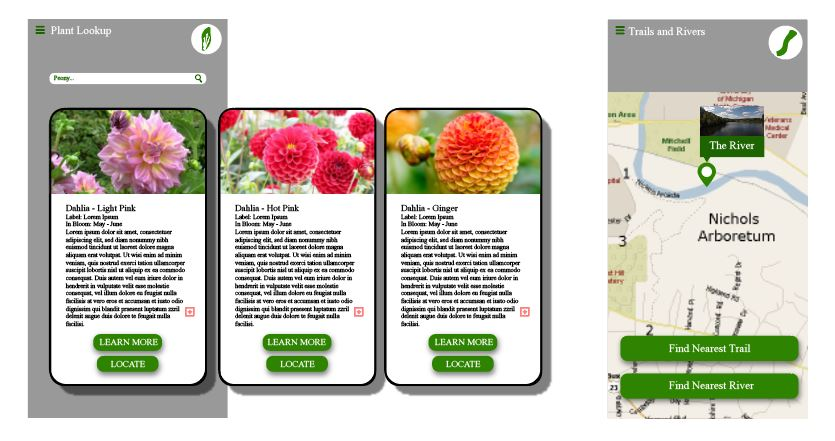
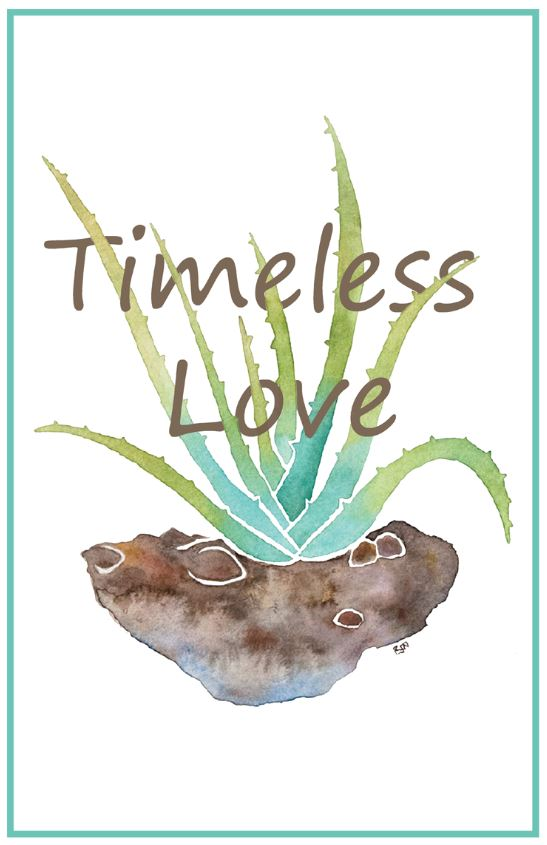

Design
App Design and Prototyping
In the fall semester of my senior year I designed an application, named Hive, with a group of four other School of Information students. The app is designed to aid the population of people that have dietary restrictions in finding places to eat. Throughout the design process we were able to create wireframes, paper prototypes, digital prototypes, and test the various prototypes on users for feedback. The process allowed for us to make numerous iterations and continue to refine the design for optimal experience, based on the feedback given. This gave me the opportunity to fully immerse myself in the research and design of a product from initial idea to final prototype. Above is a video of the final digitial prototype that was produced through Adobe Xd.
Design Process: Personas and Scenarios
In the process of designing the Hive app above there was a need for extensive preliminary research in order to create needs and requirements from a user perspective. Since we started from stratch, we first analyzed potential competitors and similar niche food applications to see where they succeeded or faultered. In doing this we were able to begin building personas, as seen in the example above, that represent potential users. The purpose of this is to identify motivations, goals, and needs of the user group as a whole. Lastly, before beginning the design and testing process, we placed these personas into scenarios to figure out best use situations for our application.
Basic App Wireframes and Mockup
Through a grephic design course I was given the opportunity to created a relatively low-fidelity app mockup that is intended for outdoor activities around the University of Michigan. The page displayed on the right is designed to aid outdoor adventurers in finding rivers and trails in the Nichols Arboretum. As well, users can index different types of plant species with the search interface on the left. For this project there was no opportunity for research, instead I was given requirements and background to influence and guide the design.
Graphic Design: Creative Art

This is a creative work that I created in Adobe Illustrator for a graphic design course. Through masking and maniputlating both the text and image I was able to make it appear that the succulent plant weaves through the phrase "Timeless Love". The phrase is respresentative of the succulent itself, as the species of plant has a tendency to live for long periods of time with fairly low maitenance. Overall, the creation displays my ability to pair text, images, and a color harmony to design an aesthetically pleasing, meaningful piece.